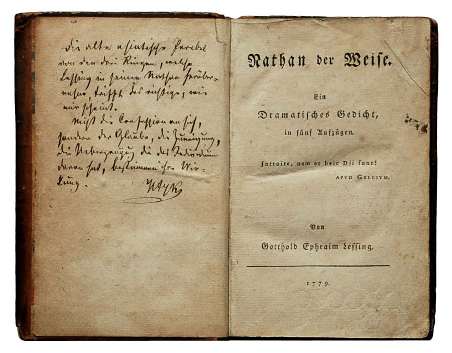
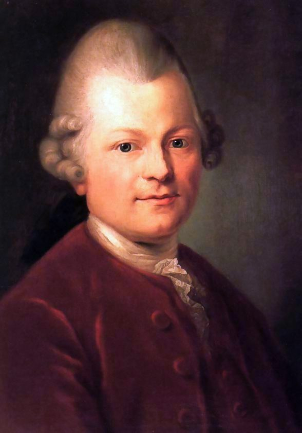
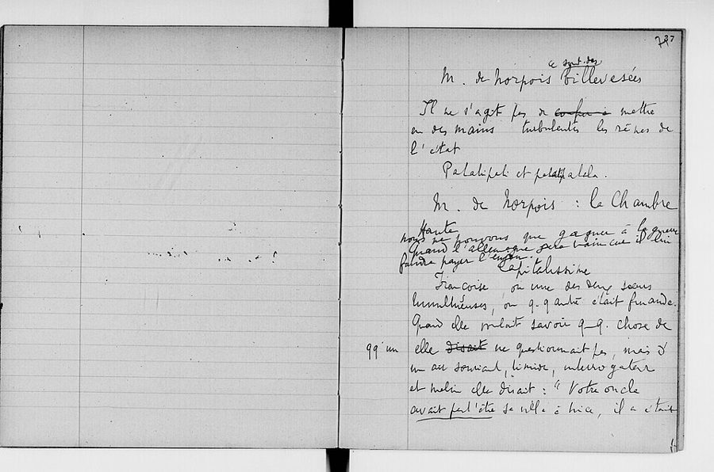

这一页在做什么
这一页是第 6 章的后两节，从戏剧走到小说。§4 讲莱辛的诗剧《智者纳坦》里的一场对话：又缺钱又着急的苏丹萨拉丁召见犹太商人纳坦，抛出一个危险的问题，纳坦用三枚戒指的寓言应对。作者不谈宗教宽容，只算这场对话里的时间账。§5 讲普鲁斯特《追忆似水年华》的最后一部：叙述者决定写书，开始计算自己还剩多少时间。读的时候抓一条线：谁急、谁慢，时间站在哪一边。

《智者纳坦》1779 年的初版，右页是书名页：「一部五幕的戏剧诗」，作者 Gotthold Ephraim Lessing。左页是一段手写的字迹。© Foto H.-P.Haack，Attribution，维基共享资源 读之前：这一页在全书的哪里
上一页（06a ）停在哈姆雷特：克劳狄斯掌握了被暴力缩短的时间，慢性子的哈姆雷特一再错过时机。这一页换成讲故事和写书的人：纳坦靠讲故事把时间拖长，普鲁斯特的叙述者为一部长作品掂量余生，才发觉自己得赶紧动笔。第 1 章的箴言「生命短，技艺长」在这一页回来两次：第 45 段说「更长的技艺」，第 53 段直接说生命之短和艺术之长。第 47 段用到第 4 章讲的 kairos，第 55 段提到第 8 章才细谈的海德格尔。
时间不够的一方，能不能反过来让时间站到自己这边？讲故事和写作品，凭什么能对付时间？
读的时候带着这几个问题。不用先找答案，读完回来对照「检查一下理解」。
萨拉丁为什么一直在催？纳坦用什么办法让他慢下来，又从中得到了什么？§4
第 45 段作者把女人和犹太人放在一起说。他说的是怎样一种角色分配？他的口气是在描述，还是在推测？§4
前六部里「找回」的时间，和第七部叙述者开始计算的时间，方向有什么不同？§5
小说结束时，那部作品写完了没有？作者怎样把叙述者和普鲁斯特本人分开？§5
这一页的路线
两节各讲一部作品，中间没有过渡。§4 大体照剧情的顺序走：召见、盘问、纳坦的独白、寓言、借钱，作者一路插进评语，替每一步记时间账；到第 45 段突然倒回去，补一场更早的戏，这一节的结论就落在这里。§5 换到普鲁斯特，第 46、47 段先讲前六部里失去的时间和不请自来的记忆，第 48 段转向第七部：从打捞过去转到为写书计算将来。读到这里会觉得和纳坦毫无关系，其实两节问的是同一件事：长的东西（一个故事、一部作品）怎样对付短的时间。
§4 莱辛《智者纳坦》
§5 普鲁斯特
苏丹急召
一连串催问
讲个小故事？
三枚戒指
借钱
倒叙：西塔
失去的时间
不请自来的记忆
决定写书
算余生、算夜晚
生命短，作品长
未完工的教堂
最后一个词
本站示意图。上面一行是 §4，下面一行是 §5，实线是阅读顺序，虚线从上一节转到下一节。§4 最后一站是作者倒回去补的一场戏；§5 从第 48 段起由回忆过去转向为写书计算将来。 作者落在哪： 讲故事的人能用最长的时间对抗权力的短时间，弱而慢的一方正该学这门「更长的技艺」；而一旦着手一部长作品，人才真正看清时间是短的。第 1 章的箴言在戏剧和小说里各回来了一次。
分节地图
这一页是原书第 6 章的第 4–5 节。粗体是这一节的主角；斜体是英文这一节开头的几个词，在电子书里搜它就能跳到那里；节里的转折用段号点出来。读完打个勾。
莱辛《智者纳坦》：苏丹召见犹太商人约 1300 词 The Sultan Saladin is a powerful … 一场对话的时间账：谁催、谁拖。第 45 段倒回去补一场戏，结论在那里。 普鲁斯特《重现的时光》：叙述者决定写书约 1400 词 The search for lost time that … 第 48 段起从回忆转向将来；第 53 段是第 1 章的箴言在小说里重演。
先用中文过一遍：这一页的概念
作者常常一笔带过、默认你懂的概念，这里先从书外讲一遍：它从哪来，是什么意思。它在这一页起什么作用，看每块最后一句。讲过的概念都汇总在概念汇总 。
§4 戒指寓言 Ringparabel（the parable of the three rings） 三枚戒指的故事很老。薄伽丘《十日谈》第一天第三个故事里，萨拉丁缺钱，想拿「犹太教、伊斯兰教、基督教哪个是真的」去套住富有的犹太人 Melchisedech，对方讲了三枚戒指的故事脱身。莱辛把它放进《智者纳坦》第三幕第 7 场：一枚祖传的戒指能让戴它的人在上帝和人面前讨喜，一位父亲同样爱三个儿子，就请工匠仿做两枚，做得连他自己都分不出哪枚是原物。三个儿子告到法官那里，法官说：各自用德行去证明自己的戒指，千千万万年后，再请一位更有智慧的法官来判。这成了启蒙时代讲宗教宽容最有名的寓言。
在这一页： 第 41–44 段。作者不谈宽容，只看讲这个故事花了多少时间、替纳坦争取到了什么。
§4 叙述时间和故事时间 Erzählzeit / erzählte Zeit（narrative time） 叙事学的一对基本概念，德国文学学者 Günther Müller 在 1940 年代末提出：叙述时间是讲（或读）一个故事所花的时间，故事时间是故事里经过的时间。一句「三年过去了」，叙述时间一秒，故事时间三年；反过来，把一个瞬间写满十页，就是把叙述时间拉长。好比一段视频：片长是叙述时间，情节跨过的日子是故事时间。讲故事的人能控制前者，所以能拖时间。Weinrich 本人是研究时态和叙述的语言学家，常这样算时间账。
在这一页： 第 42 段：纳坦故意把戒指寓言讲得很细，用掉大量叙述时间。第 9 章还会用到这对概念。
§5 非自主记忆 mémoire involontaire 普鲁斯特的说法。他把记忆分两种：自主的记忆由理智调动，能想起过去「发生了什么」，却是干瘪的；非自主的记忆不请自来，一个味道、一个触感，忽然把一整段过去连同当时的感觉一起送回来。最有名的例子在第一部《在斯万家那边》：叙述者把一块玛德莱娜小蛋糕泡进茶里，一尝，童年的贡布雷整个浮了上来。到最后一部，脚下踩到高低不平的铺路石、听到勺子碰盘子的声音，又各触发了一次。好比专门去搜搜不到的东西，偏在不找的时候自己弹出来。
在这一页： 第 46–47 段。作者说这种记忆强求不来，来了却带给人一段 kairos 式的充实时间。
§5 记忆术 ars memoriae（art of memory） 古典修辞学把演说分成五步：构思、布局、措辞、记忆、发表，记忆术就是第四步的训练法。传说诗人西摩尼德斯（Simonides）赴宴时宴会厅倒塌，他靠记得每位客人坐在哪里认出了遇难者，由此想出「位置法」：把要记的东西变成鲜明的图像，一一放进熟悉的房间、街道里，用的时候在脑子里走一遍。西塞罗在《论演说家》里讲了这个故事，还说视觉是我们所有感官里最敏锐的，所以眼睛看来的东西最好记。今天说的「记忆宫殿」就是这一套。
在这一页： 第 47 段。作者拿这个传统作反衬：普鲁斯特那种记忆不听视觉和意志使唤，要靠嗅觉、味觉、触觉。
书里的人和作品
按在书里出现的顺序排，标题前是节号。作品只讲到读懂这一节需要的程度。
§4 莱辛和《智者纳坦》《智者纳坦》（Nathan der Weise）1779 年出版，1783 年才在柏林首演，那时莱辛已去世两年。它是五幕的「戏剧诗」，用不押韵的诗行写成，故事放在第三次十字军东征期间、停战中的耶路撒冷：苏丹萨拉丁、犹太商人纳坦、一位年轻的基督教圣殿骑士，剧终时发现，基督徒骑士和纳坦收养的女儿是兄妹，又都是萨拉丁的侄子侄女。动笔之前，莱辛因为和汉堡的主任牧师 Goeze 论战宗教，被不伦瑞克公爵禁止再发表这方面的文字，便转向舞台。书里没有写这部剧的年份。
莱辛 Gotthold Ephraim Lessing，1729–1781 德国启蒙时代的剧作家、批评家，《拉奥孔》《汉堡剧评》的作者。这一页讲的是他最后一部剧。
萨拉丁 Saladin，约 1137–1193 埃及和叙利亚的苏丹，1187 年从十字军手里夺回耶路撒冷。在剧里是又缺钱又着急的君主。

Anton Graff 画的莱辛像，1771 年。Anton Graff，公有领域，维基共享资源 §4 那场戏在剧里的位置作者讲的是第三幕第 4–7 场（注 25）：第 4 场，萨拉丁和妹妹西塔（Sittah）商量怎么用「小计谋」对付纳坦；第 5 场，召见、发问；第 6 场，纳坦独自一人想对策；第 7 场，讲戒指。作者先讲第 5–7 场，到第 45 段才倒回去补第 4 场。还有一处和剧本不同：第 42 段说戒指在代代相传中最后丢了，父亲做了三枚仿品；剧里戒指没有丢，传到这位父亲手里，他请工匠另做两枚，和原物一起分给三个儿子。
§5 普鲁斯特和《追忆似水年华》普鲁斯特（Marcel Proust）生在巴黎的富裕人家，自小哮喘，后半生多半关在卧室里，夜里写作。《追忆似水年华》（À la recherche du temps perdu）共七部，1913 年起陆续出版；后三部是他 1922 年去世后才出的，第七部《重现的时光》（Le Temps retrouvé）1927 年出版，第 57 段说的正是这一年。小说里的「我」几乎没有名字，作者第 49 段说「姑且叫他马塞尔」，只是为了称呼方便；到第 57 段才把叙述者和作者普鲁斯特分开说。
普鲁斯特 Marcel Proust，1871–1922 法国小说家。这一页讲他的长篇的最后一部。
普鲁斯特，1895 年前后，摄影师 Otto Wegener 拍摄（局部）。Otto Wegener，公有领域，维基共享资源 §5 《重现的时光》的结尾第七部的后半，叙述者在盖尔芒特府的一场午后聚会上，接连被几个不经意的感觉带回过去，又看见多年不见的熟人都老了，终于决定动笔写书。作者在第 48–57 段讲的，都是全书最后这几十页：算要用多少个夜晚，想到《一千零一夜》，在楼梯上险些摔倒，把要写的书比作没完工的大教堂。小说的最后一句以 Du moins（至少）开头，是一个条件句；全书最后一个词是 Temps。

普鲁斯特写《追忆似水年华》时的一本草稿本，法国国家图书馆藏。右页能认出小说里的人物 Norpois 和 Françoise。Marcel Proust，公有领域，维基共享资源 §5 山鲁佐德和「艺术的残酷法则」《一千零一夜》的框架故事里，国王每夜娶一个新娘、天一亮就杀掉；山鲁佐德每夜讲故事讲到天亮不收尾，国王为了听下文，一夜夜推迟行刑。第 9 章第 1 节会细讲（09a ）。普鲁斯特原文没有点山鲁佐德的名，是说主宰他命运的那一位，未必像苏丹 Sheriar 那样宽容，肯在早上他停笔时缓期行刑。第 52 段的「艺术的残酷法则」在原文里是前几页的另一段话，说的是人要死去、受尽痛苦，作品才长得出来；作者把两处放在一起读。
§5 书里顺手提到的人这几位在书里只出现一两句，作者没有介绍。
西塞罗 Cicero，前 106–前 43 罗马演说家、政治家。第 47 段说视觉是「最敏锐的感官」，出自他的《论演说家》，见上面的概念块「记忆术」。
海德格尔 Martin Heidegger，1889–1976 德国哲学家，《存在与时间》1927 年出版。第 55 段说叙述者的心境近乎海德格尔，见
向死存在 。
阿纳托尔·法朗士 Anatole France，1844–1924 法国小说家，1921 年获诺贝尔文学奖。注 29 引了他一句俏皮话 La vie est trop courte et Proust est trop long：人生太短，普鲁斯特太长。这正好把普鲁斯特的书放到了「技艺长」那一边。
词与短语
你用 Kindle，单个生词长按就能查，这里只收词典帮不上的：每个词都认识、合起来不懂的说法，学术腔，没翻译的外文，典故。斜体小字是原句里连续的几个词，错字照电子书原样，搜它就能跳到那里。
§4 莱辛《智者纳坦》：苏丹召见犹太商人
short of time
… money but also short of time.25
时间不够
short of 是缺。苏丹缺钱，也缺时间；节名 Saladin Learns to Take His Time 说的就是这个急性子最后学会了慢下来。
augur no good
… curt manner that augurs no good
预示着没好事
augur 原是古罗马观鸟占卜的祭司，作动词是「预示」。不是「不占卜」。
keep a low profile
… Nathan keeps a low profile and …
放低姿态，不露锋芒
profile 是轮廓、露面的程度，low profile 是尽量不引人注意。
one’s patience is at an end
… that their patience is at an end
耐心到头了
at an end 是「完了、到头」。作者说「直入正题」这句套话，是有权的人没耐心时最顺口的话。
hold out the prospect of
… he holds out the prospect of a …
（先）许下……的盼头
不是「坚持」。hold out 在这里是递出去给人看，纳坦先暗示可以给个好价钱。
cut short
… another formula for cutting short discussion …
打断，草草结束（谈话）
作者一连点了几句「套话」：直入正题、简而言之、我没回来得太快吧，都是用来掐断对方话头的。
Generously, it seems,
Generously, it seems, he even gives …
看上去很大方地
it seems 是作者的保留：只是「看上去」大方，下半句就露了底，留给纳坦想的时间只有一会儿，苏丹还在催。
what one is after
… to blurt out what one is after.
自己真正想要的东西
be after 是追求、打……的主意，不是「在……之后」。blurt out 是脱口说出。
take … at face value
… does not take the sultan's words …
信以为真，只看字面
face value 是钞票、票据上印的面值。纳坦不按面值收苏丹的话。
the stake is high
… in this question the stake is high
赌注很大
stake 是押上的赌注，后面一串说法说的是押上的是性命和家产。
Geschichtchen
… tell you a little story (Geschichtchen)?
（德文）小故事
Geschichte（故事）加上指小的词尾 -chen。作者下一句就提醒你留意这个「小」字：说成小故事，对方才肯放松，结果讲得一点也不小。
oriental enough to swallow this bait
… is oriental enough to swallow this bait …
够「东方」，于是吞下了这个饵
swallow the bait 是上钩。作者用 oriental 一词笼统地概括萨拉丁，没有展开说是什么意思。这是作者原话的口气，本站照录，不替它加限定，也不当反话读。
the patience trap
… we can call the patience trap.
耐心陷阱
作者自己起的名字：急性子被诱着说「快讲」，等于答应听完一个长故事，把时间让给了讲故事的人。
get time on one’s side
Now he has gotten time on his side, …
让时间站到自己这边
on one’s side 是「站在……一边」。gotten 是美式英语的过去分词。
narrative time
… a great deal of narrative time:
叙述时间
讲故事所花的时间。见概念块「叙述时间和故事时间」。冒号后面那句是剧里的原话，意思是「事情就这样传着，传了很久」。
bring into the field against
… which he brings into the field against …
拿上阵来对抗
field 是战场。作者把两种时间写成两军对垒：纳坦的「最长的时间」对萨拉丁的短时间。
claim its rights
… money finally claims its rights as …
（钱）终于要出场了
字面是「主张自己的权利」：前面一直绕着宗教谈，钱这时才走到台前，讨回自己的位置。
the real ground or background
… understood the real ground or background …
真正的理由，或者说背后藏着的东西
ground 是理由、根据，background 是幕后的背景，两个词共一个 ground，作者顺手玩了一下。
go easy on
One has to go easy on people …
对……手下留情
best 作动词是「胜过、击败」，people one has bested 是被你赢了的人。这是作者自己加的一句格言式评语。
talk oneself out of a jam
… listens in on the sultan's conversation …
靠一张嘴从困境里脱身
jam 在口语里是困境，不是果酱。这句在引号里，是剧里西塔的话；搜引号前面这几个词就能找到。
play the weaker and slower parts
… play the weaker and slower parts …
扮演较弱、较慢的角色
part 是戏里的角色。作者说在西方男性主导的社会里，女人和犹太人一向同处这个角色，原文是直陈（have always shared），没有「也许」。
traffic with
… right to traffic with storytellers and …
和……打交道
不是交通。traffic with 是来往、做买卖，带一点「私下往来」的味道。
their longer art
… to learn from their longer art.
他们那门更长的技艺
回扣全书开头的「技艺长」：讲故事的技艺能把时间拉长。art 照第 1 章的意思读作技艺，见
技艺 。
§5 普鲁斯特《重现的时光》：叙述者决定写书
À la recherche du temps perdu
… Proust's novel A III Recherche du temps …
（书名）《追忆似水年华》，字面是「寻找失去的时间」
电子书里 À la 识别成了 A III。作者第一句就在拆书名的字面：search 对应 recherche。
Le Temps retrouvé
(Le Temps retrouve).26 Yet both titles …
（书名）《重现的时光》，字面是「找回的时间」
第七部的标题。作者说两个书名都有点误导：前六部的时间并不是有意去「找」的。
the art of memory
… tradition of the art of memory …
记忆术
古典修辞学的一门功课，见概念块「记忆术」。后面括号里的拉丁文扫描坏了，见本节末尾。
the duller senses
… draw upon the duller senses, namely …
较迟钝的感官（嗅觉、味觉、触觉）
dull 和前面的 acute（敏锐）相对。注 27 作者叫它们 lower senses，「低级感官」，是传统的排法，作者偏偏把记忆托付给它们。
the taste of a teacake
… in the taste of a teacake …
一块茶点的味道
指《在斯万家那边》里泡在茶里的玛德莱娜小蛋糕，见概念块「非自主记忆」。
let it work on him
… who lets it work on him will …
任它在自己身上起作用
work on 是对……起作用、影响，不是「在……上干活」。
an experience of kairos
… accompanied by an experience of kairos …
一次时机（kairos）的体验
kairos 是第 4 章讲的「恰当的时机」，见
kairos 。这里说的是被时间充满的一刻。
tear the brush from his hand
… doesn't break in and tear the brush …
把画笔从他手里夺走
接着前面「时间这位画家」的比喻：叙述者想当时间的画家，怕黑暗（死亡）先来夺走画笔。
aiguillon
… in the form of a spur (aiguillon) …
（法文）刺棒，驱赶牲口的尖棍
作者给的英文是 spur（马刺）：时间这个主题像一根刺，催着他动笔。
le temps … le Temps
… him to live (le temps) might not …
（法文）小写的是余下的时间，大写的是作品的主题「时间」
同一个词，一个是他还能活多久，一个是要写的那部书。双关只在法文里成立，英文只好在括号里注出来。第 57 段说全书最后一个词就是大写的 Temps。
mis en sûreté
… (mis en surete) in a book …
（法文）存放到安全的地方
sûreté 是安全。作品没写成书之前，只是脑子里的想法，随身体一起冒险。第 56 段又用了一次。
a besieged fortress
… comparable to a besieged fortress whose …
被围困的要塞
创造力住在一个易碎的身体里，作者说它更可能先陷落，而不是先等到书写完。
oeuvre
… successful completion of the book, the oeuvre.
（法文）作品，一个人的毕生之作
节名 Time and the Oeuvre 的那个词。英文借来指一位作家全部的作品或最重要的那部。
be vouchsafed
… he was vouchsafed a fragment of …
蒙恩得到
vouchsafe 是旧式的庄重词，「恩赐」。前面找回的那些过去，是命运赏的，不是他求来的。
il est grand temps
… set to work, for it is already
（法文）早该动手了
字面是「时间已经大了」，英文 high time 是同样的说法。这句在引号里，搜引号前面这几个词。
la loi cruelle de l’art
… (la loi cruelle de fart).
（法文）艺术的残酷法则
电子书里 de l’art 识别成了 de fart。这句话在普鲁斯特原文里的出处，见上面「山鲁佐德和「艺术的残酷法则」」。
the shortness of life and the length of art
… the shortness of life and the …
生命之短和艺术之长
long à écrire
… long in the writing (long a ecrire), …
（法文）要写很久
long 在这里说的是写作所需的时间长，不是书本身厚。
cathedrals that were never entirely finished
… that were never entirely finished.
一直没有完全建成的大教堂
中世纪的大教堂常要盖上百年，不少到今天也没完工。普鲁斯特把要写的书比作教堂，第 57 段作者接着用这个比喻。
la longueur de ses années
(la longueur de ses annees). If there …
（法文）他岁月的长度
和前面「身体的长度」对仗：画一个人，不只画他有多高，还要画出他活了多久。
an almost Heideggerian condition of the soul
… an almost Heideggerian condition of the …
近乎海德格尔式的心境
almost 不能丢。作者说的是被死亡的念头占据的焦虑，比《存在与时间》（1927）早几年。见
向死存在 。
conditional mood
… is in the conditional mood, and …
条件式
mood 在语法里是「语气、式」，不是心情。条件式说的是「假如……就会……」，所以书写没写完，句子本身不给答案。
untimely death
… after Proust's untimely death, the …
过早的死
untimely 是「不到时候的」，多指早逝，不是「不合时宜」。普鲁斯特去世时五十一岁。
读不通的扫描错字：
… novel A III Recherche du temps perdu … 应为 À la recherche du temps perdu。… art of memory (ars rhetoric,) is … 括号里的拉丁文扫描坏了，读不通。前面说的是记忆术，拉丁文通常叫 ars memoriae。… and presented anew.21 注号应为 28（Hillebrand 那本讲「瞬间」美学的书），不是 21。… let us call him Marcelcalled upon … 中间丢了破折号：let us call him Marcel — called upon to be a painter of time。
读完：作者到底说了什么
读完这一页的几节再看。下面是作者在这几节里的论点，由本站按论点重新组织，不按原书的顺序；每条右上角是依据所在的段落，拿不准就回书里那几段再读一遍。
有权的人缺时间，讲故事的人能把时间赢过来 萨拉丁又缺钱又着急，满口掐断话头的套话。纳坦请求讲一个「小故事」，苏丹急着催他讲，反倒掉进作者说的「耐心陷阱」：时间到了纳坦这边，他可以从容地细讲。
§4 第 35、38、41、42 段 纳坦用「最长的时间」对抗苏丹的短时间 寓言的结论是：哪种宗教为真，要等千千万万年才见分晓。作者说这是纳坦拿上阵的最长时间。他也指出哲学问题背后是钱：苏丹想诱纳坦失言，大概好用最低的代价、甚至分文不付拿到钱。
§4 第 43、44 段 弱而慢的一方，正该学讲故事这门更长的技艺 作者说，在西方男性主导的社会里，女人和犹太人一向同处一个角色：在男人强硬、匆忙的交易里是弱而慢的一方，所以和讲故事的人来往、向他们学，是对的。偷听的西塔早就站在纳坦一边。
§4 第 45 段 要写一部作品，人才知道时间是短的 不请自来的记忆带来的是 kairos 式的充实。可叙述者一旦决定写书，就要算余生、算夜晚：作品很长，余生大概很短，书可能写不完。作者说这也许是最重要的时间经验，心境近乎海德格尔。
§5 第 47、51、53、55 段 叙述者没写完，作者普鲁斯特写完了 小说止于一个条件句，时间的大教堂在叙述者心里还没动工。作者把两人分开：正是用这句条件句，普鲁斯特完成了这部书，最后一个词是大写的「时间」。
§5 第 56、57 段
合起来： 两节都是在跟时间算账。纳坦用一个长故事从急躁的权力那里赢得时间；普鲁斯特的叙述者为一部长作品掂量余生，第 1 章的「生命短，技艺长」在一部现代小说里原样重演。
第 6 章合起来： 这一章把短缺的时间搬上舞台和小说。上一页先讲戏剧的时间规则：「史诗长、戏剧短」被后人定成时间单一律，高乃依把二十四小时摊成两天；到《哈姆雷特》，时间从规则变成剧情：克劳狄斯掌握被暴力缩短的时间，慢性子的哈姆雷特错过时机，结局时各人怎样用最后一点时间，定了各自的下场。这一页里，慢的一方靠讲故事赢得时间，写长作品的人在计算余生时认清时间之短。
值得停下来的句子
That is Nathan's definitive longest time, which he brings into the field against Saladin's short time.— §4 第 43 段。本站译：这就是纳坦最终的、最长的时间，他拿它上阵，去对抗萨拉丁的短时间。
主干只有 That is … time，后面一个 which 从句把它变成一场对阵：longest time 对 short time，一个用最高级，一个只用原级。definitive 是「最终的、定论性的」：寓言到这里收尾，千千万万年，再没有比它更长的了。作者的判断落在 against 上：讲故事不只是拖延，是拿时间去打仗。
has granted the narrator an important-perhaps the most important-experience of time: time is short.— §5 第 51 段。本站译：……让叙述者得到了一次重要的，也许是最重要的时间经验：时间是短的。
电子书里两处破折号成了连字符，读的时候把 important-perhaps 和 important-experience 拆开：中间夹着一个插入语 perhaps the most important，作者先说「重要」，再退半步加一句「也许最重要」。冒号后面四个词是结论，短得像一句格言，又回到了希波克拉底那句话的口气。
检查一下理解
先在心里答，再点开。答错的那题，回书里把对应那一节再读一遍。
1.（§4）萨拉丁为什么召见纳坦？作者说他真正想要的是什么？ 表面上问三种宗教哪个最可信。作者说这个哲学问题只是陷阱，要让纳坦说错话，大概好用最便宜的价钱、甚至分文不付拿到钱。他缺钱，也缺时间。
2.（§4）作者说的「耐心陷阱」是什么？谁掉了进去？ 萨拉丁急着要答案，听纳坦说要讲个小故事，就催他快讲，等于答应听完一个长故事。时间于是到了纳坦那边。掉进去的是萨拉丁。
3.（§4）纳坦「最长的时间」指什么？ 戒指寓言的结论：三种宗教哪个是真的，要等千千万万年才见分晓。作者说纳坦拿这个最长的时间去对抗萨拉丁的短时间。
4.（§4）第 45 段作者怎样说女人和犹太人？他的口气是推测吗？ 他说在西方男性主导的社会里，两者一向在男人强硬匆忙的交易里扮演较弱、较慢的角色，所以和讲故事的人来往、学他们更长的技艺是对的。原文是直陈句，没有「也许」之类的限定。
5.（§5）前六部里找回的时间，和第七部叙述者想到的时间，方向有什么不同？ 前面是不请自来的过去，从记忆深处浮上来，强求不得。第七部转向将来：为了写一本书要等待、要计算的时间。
6.（§5）叙述者为什么这时才明白「时间是短的」？ 因为他有了一部要花很长时间写的作品，余生可能不够。以前碰上找回的时间时，他还没认清这一点。作者说这也许是最重要的时间经验。
7.（§5）小说结束时，那部书写完了吗？ 在叙述者那边没有：最后一句是条件句，大教堂还没动工。可作者普鲁斯特用这句话写完了这部书，最后一个词是大写的 Temps。
用一句话说这一页，写给一个没读过的人。
想一想：你手上有没有一件「要写很久」的东西，一个项目、一本书、一个长期计划？要是像普鲁斯特的叙述者那样，算一算它还要多少个晚上，你算得出来吗？知道余下的时间不一定够，你会马上动手，还是先把它改小？
精彩回顾
读过又忘了，从这里想起来。挑的是这一页最值得记住的人、说法和比喻，不按原书顺序；每条后面是节号，想细看就回书里那一节。全书各页的这一节都收在全书回顾 。
一句话： 讲故事和写作品都在跟时间算账：纳坦用一个长故事从急躁的苏丹那里赢得时间，普鲁斯特的叙述者为了写书，才真正看清生命短、作品长。
耐心陷阱 纳坦问能不能讲个「小故事」，急性子的萨拉丁连声催他快讲，反倒把时间让给了纳坦。
§4 千千万万年 戒指寓言的结论：哪种宗教为真，要等千千万万年才见分晓。这是纳坦拿来对抗苏丹短时间的「最长的时间」。
§4 更长的技艺 作者说，女人和犹太人在男人匆忙的交易里一向是弱而慢的一方，正该向讲故事的人学那门更长的技艺。偷听的西塔早站在纳坦一边。
§4 时间是短的 普鲁斯特的叙述者决定写书，才真正懂得余生也许不够把它写完。生命短、作品长，第 1 章的箴言在小说里重演。
§5 小写的 temps，大写的 Temps 余下的时间够不够写一部关于时间的书？法文里两者是同一个词。全书最后一个词就是大写的 Temps。
§5